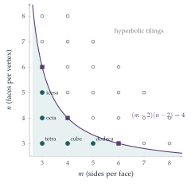

A polyhedron is a solid bounded by \(F\) plane faces, which meet in \(E\) edges and \(V\) vertices. You may assume Euler’s formula, that \(V - E + F = 2\).
In a regular polyhedron the faces are equal regular \(m\)-sided polygons, \(n\) of which meet at each vertex. Show that \[F = \frac{4n}{h},\] where \(h = 4 - (n - 2)(m - 2)\).
By considering the possible values of \(h\), or otherwise, prove that there are only five regular polyhedra, and find \(V\), \(E\) and \(F\) for each.
The hook
There are infinitely many regular polygons: triangles, squares, pentagons, and so on for every number of sides. You might expect infinitely many regular polyhedra too. There are exactly five: the tetrahedron, cube, octahedron, dodecahedron and icosahedron. Plato associated four of them with the elements (fire, earth, air, water) and the fifth with the cosmos; Euclid’s Elements, the most influential mathematics book ever written, ends with a proof that there are no others; Kepler built a model of the solar system from them.
This question proves the classification in a few lines, from a single remarkable formula found by Euler in 1750: for any convex polyhedron, \(V - E + F = 2\). A formula about counting turns into a theorem about shapes, and the number \(2\) turns out to be a fingerprint of the sphere.
Before you start
Check Euler’s formula on a cube: how many vertices, edges and faces does it have? And on a square-based pyramid?
The cube has \(V = 8\), \(E = 12\), \(F = 6\), and \(8 - 12 + 6 = 2\). The square-based pyramid has \(5\) vertices, \(8\) edges and \(5\) faces, and \(5 - 8 + 5 = 2\). The formula holds for any polyhedron without holes, however irregular.
In a regular polyhedron, each face has \(m\) edges and each edge borders two faces. What equation does that give between \(E\) and \(F\)? Similarly, between \(E\) and \(V\)?
Counting edge–face incidences in two ways: each of the \(F\) faces has \(m\) edges, and each edge is counted twice (once for each of its two faces), so \(mF = 2E\). Similarly each vertex has \(n\) edges and each edge has two ends, so \(nV = 2E\). This “count the same thing in two ways” trick is called double counting.
Working it through
Stage 1 A formula for \(F\)
From \(mF = 2E\) and \(nV = 2E\), we have \(E = \frac{mF}{2}\) and \(V = \frac{mF}{n}\). Substituting into Euler’s formula, \[\frac{mF}{n} - \frac{mF}{2} + F = 2 \quad\Longrightarrow\quad F\,\frac{2m - mn + 2n}{2n} = 2 \quad\Longrightarrow\quad F = \frac{4n}{2m + 2n - mn}.\] And \(4 - (n - 2)(m - 2) = 4 - (mn - 2m - 2n + 4) = 2m + 2n - mn = h\). So \(F = \frac{4n}{h}\).■
Stage 2 Which values of \(m\) and \(n\) are possible?
What is the smallest possible value of \(m\) (sides of a face) and of \(n\) (faces at a vertex)? And since \(F > 0\), what sign must \(h\) have?
A polygon needs at least \(3\) sides, so \(m \geq 3\), and at least \(3\) faces must meet at each vertex of a solid, so \(n \geq 3\). Since \(F > 0\), we need \(h > 0\), that is, \((n - 2)(m - 2) < 4\). With both factors at least \(1\), the only possibilities for \((m - 2, n - 2)\) are \((1, 1)\), \((1, 2)\), \((2, 1)\), \((1, 3)\) and \((3, 1)\).
For each of the five possibilities, compute \(h\), then \(F\), then \(E = \frac{mF}{2}\) and \(V = \frac{mF}{n}\). Identify each solid.
| \(m\) | \(n\) | \(h\) | \(F\) | \(E\) | \(V\) | solid |
|---|---|---|---|---|---|---|
| \(3\) | \(3\) | \(3\) | \(4\) | \(6\) | \(4\) | tetrahedron |
| \(3\) | \(4\) | \(2\) | \(8\) | \(12\) | \(6\) | octahedron |
| \(4\) | \(3\) | \(2\) | \(6\) | \(12\) | \(8\) | cube |
| \(3\) | \(5\) | \(1\) | \(20\) | \(30\) | \(12\) | icosahedron |
| \(5\) | \(3\) | \(1\) | \(12\) | \(30\) | \(20\) | dodecahedron |
These are the only possibilities, so there are at most five regular polyhedra; and all five exist (Euclid shows how to construct each of them).■
Looking back
Double counting. Counting edge–face and edge–vertex incidences in two ways gave \(mF = 2E\) and \(nV = 2E\).
An inequality from positivity. The simple requirement \(F > 0\) cut infinitely many candidates down to five.
Existence is separate. The argument shows there are at most five; that each actually exists has to be checked by constructing it.
What’s really going on
Euler stated \(V - E + F = 2\) in 1750, but his proof had gaps, and the formula has a fascinating history of attempted proofs, counterexamples and repairs. A “picture frame” polyhedron, with a square hole through the middle, has \(V - E + F = 0\); a polyhedron made of two cubes joined at a vertex has \(V - E + F = 3\). Imre Lakatos turned this history into a famous book, Proofs and Refutations, about how mathematical concepts are sharpened by counterexamples. The resolution is that \(V - E + F\) depends only on the shape of the surface in the loose sense of topology: it is \(2\) for any surface that can be deformed into a sphere, \(0\) for a torus (a doughnut), and \(2 - 2g\) for a surface with \(g\) holes. This number, the Euler characteristic, was one of the first ideas of topology, the study of properties unchanged by stretching and bending.

Beyond the sphere
What happens when \(h = 0\) or \(h < 0\)? When \((m - 2)(n - 2) = 4\), there are three solutions, \((3, 6)\), \((4, 4)\) and \((6, 3)\): six triangles, four squares or three hexagons meet at a point with angles adding up to exactly \(360^\circ\). These are the three regular tilings of the flat plane, the patterns of bathroom floors and honeycombs. And when \((m - 2)(n - 2) > 4\), the angles at a vertex add up to more than \(360^\circ\), which is impossible in the flat plane but perfectly possible in the hyperbolic plane of Section 5.8. There are infinitely many regular tilings of the hyperbolic plane, one for every point above the curve in Figure 7.9.1; Escher’s Circle Limit woodcuts are drawings of some of them. So the classification of Platonic solids is really the first case of a trichotomy (sphere, plane, hyperbolic plane) that runs through all of geometry.
Symmetry groups
The symmetries of the Platonic solids form groups: \(12\) rotations for the tetrahedron, \(24\) for the cube and octahedron (which are dual: swap faces and vertices, \(m \leftrightarrow n\)), and \(60\) for the dodecahedron and icosahedron. The icosahedral group of order \(60\) is the “simple” group that, as we mentioned in Section 6.4, prevents the quintic from being solved by radicals. Felix Klein wrote a whole book, Lectures on the Icosahedron (1884), connecting the icosahedron to the solution of quintic equations.
The thinking skill
Count the same collection in two different ways and equate the results.
Here the collection was the set of (edge, face) pairs with the edge on the face. Double counting is one of the most powerful tools in combinatorics, and it reappears throughout Chapter 9.
Try this next
Duality. Show that swapping \(m\) and \(n\) swaps \(V\) and \(F\) and leaves \(E\) unchanged. Which pairs of Platonic solids are dual to each other? Which is self-dual?
A football. A traditional football is made of \(12\) pentagons and \(20\) hexagons, with three faces meeting at each vertex. Use double counting and Euler’s formula to check that \(V - E + F = 2\). Show more generally that any such polyhedron made of pentagons and hexagons, three at each vertex, has exactly \(12\) pentagons.
A torus. Make a “picture frame” polyhedron (a square block with a square hole) and count \(V\), \(E\) and \(F\). Check that \(V - E + F = 0\).
Angles at a vertex. The interior angle of a regular \(m\)-gon is \(180^\circ(1 - \frac2m)\). Show that \(n\) of them fit round a vertex of a convex solid (total less than \(360^\circ\)) exactly when \((m - 2)(n - 2) < 4\), giving a second proof of the classification.
Further reading
David Richeson, Euler’s Gem (Princeton University Press). The history of \(V - E + F = 2\) and how it led to topology. Excellent for a sixth-former.
Imre Lakatos, Proofs and Refutations (Cambridge University Press). A dialogue about Euler’s formula and the nature of proof.
H. S. M. Coxeter, Regular Polytopes (Dover). The classic book on regular polyhedra and their higher-dimensional cousins.